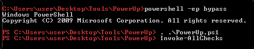

Executable Files Overview
Sometimes, we can see some services that have executable attached:
if it has
FILE_ALL_ACCESS
permission, we can do malicious things!!
First of all, run PowerUp from the Powershell:
We are going to use the
Invoke-AllCheck:

While loading, we can run another command:
C:\Users\User\Desktop\Tools\Accesschk\accesschk64.exe -wvu "C:\Program Files\File Permissions Service"
We have FILE_ALL_ACCESS!!